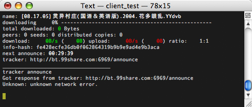

client_test example program
Client test is a, more or less, complete bittorrent client. It lacks most settings and you can't start or stop torrents once you've started it. All the settings are hardcoded. The commandline arguments are:
client_test <filename1.torrent> <filename2.torrent> ...
You can start any number of torrent downloads/seeds via the commandline. If one argument starts with http:// it is interpreted as a tracker announce url, and it expects an info-hash as the next argument. The info-hash has to be hex-encoded. For example: 2410d4554d5ed856d69f426c38791673c59f4418. If you pass an announce url and info-hash, a torrent-less download is started. It relies on that at least one peer on the tracker is running a libtorrent based client and has the metadata (.torrent file). The metadata extension in libtorrent will then download it from that peer (or from those peers if more than one).
While running, the client_test sample will look something like this:

The commands available in the client are:
- q quits the client (there will be a delay while the client waits for tracker responses)
- l toggle log. Will display the log at the bottom, informing about tracker and peer events.
- i toggles torrent info. Will show the peer list for each torrent.
- d toggle download info. Will show the block list for each torrent, showing downloaded and requested blocks.
- p pause all torrents.
- u unpause all torrents.
- r force tracker reannounce for all torrents.
- f toggle show file progress. Displays a list of all files and the download progress for each file.
The list at the bottom (shown if you press d) shows which blocks has been requested from which peer. The green background means that it has been downloaded. It shows that fast peers will prefer to request whole pieces instead of dowloading parts of pieces. It may make it easier to determine which peer that sent the corrupt data if a piece fails the hash test.
There's unicode support on linux, MacOS X and Windows.